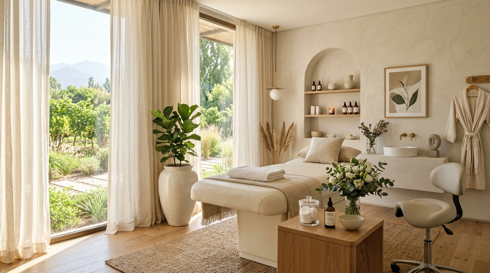
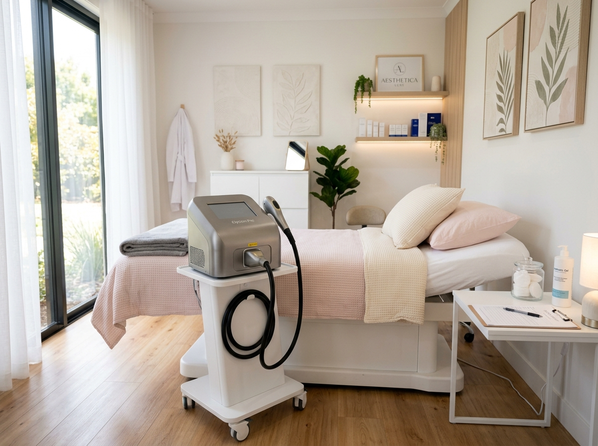
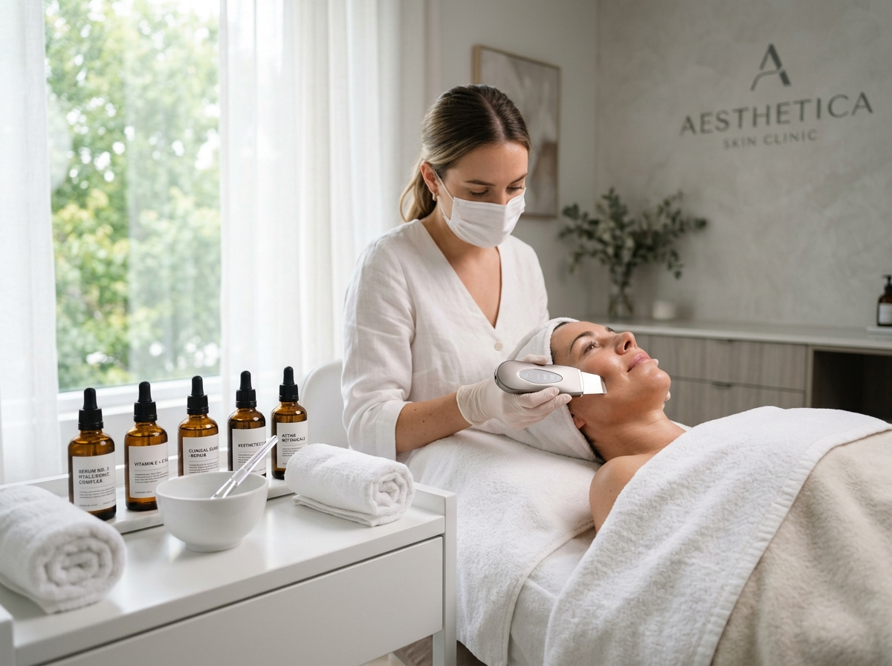
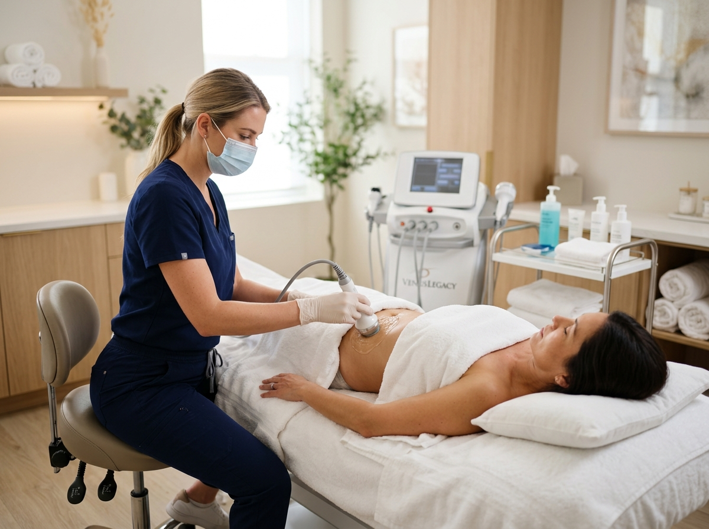
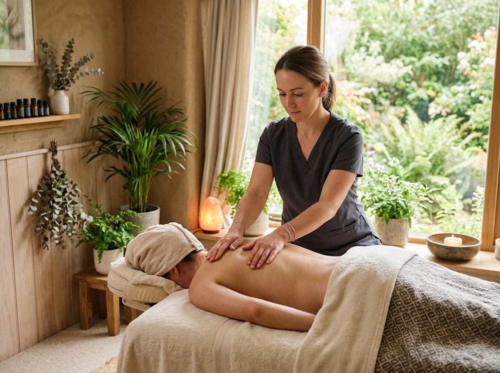
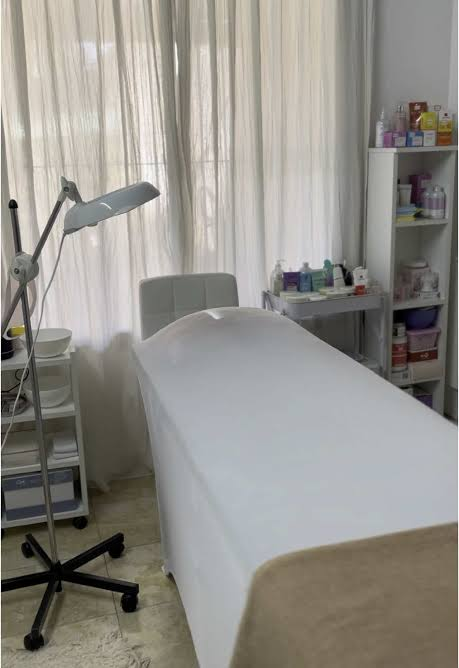

Atención Exclusiva 1 a 1
El consultorio se reserva para una sola persona a la vez. No compartís sala de espera con desconocidos ni sufrís demoras innecesarias. Ingresás a tu hora convenida en un clima de silencio y confort.
Un espacio íntimo donde la tecnología de vanguardia y la armonía personal se encuentran. Atendido exclusivamente por su fundadora con 20 años de experiencia, 100% con turno previo programado, sin esperas compartidas y con atención unisex personalizada.

Tu tiempo, tu intimidad y tu tranquilidad son la prioridad. Diseñamos un modelo de atención donde nunca sos un número más ni esperás en una sala concurrida.
El consultorio se reserva para una sola persona a la vez. No compartís sala de espera con desconocidos ni sufrís demoras innecesarias. Ingresás a tu hora convenida en un clima de silencio y confort.
Nuestra aparatología —incluyendo el Láser Titanium y los sistemas de radiofrecuencia— reside de manera fija en el consultorio. Coordinamos tus sesiones cualquier día de la semana sin atarte a fechas itinerantes mensuales.
Dos décadas de experiencia en cosmetología, drenaje y aparatología aplicada. Cada sesión es evaluada y ejecutada por la misma profesional, garantizando un seguimiento riguroso y personalizado de tu evolución.
Utilizamos y representamos oficialmente cremas, principios activos y sueros de Laboratorio Laca. Pureza dérmica certificada para potenciar cada resultado clínico y continuar tu cuidado en casa.
Olvidate de las fechas restrictivas y del dolor innecesario. Incorporamos la tecnología más eficiente del mercado en nuestro propio gabinete para ofrecerte una experiencia cómoda, segura y con resultados visibles desde las primeras sesiones.
Sistema de frío por contacto que minimiza la sensación térmica en la piel, permitiendo un tratamiento sumamente confortable e indoloro.
Al no depender de alquileres de aparatología, reservás tu sesión de lunes a sábado según tu conveniencia horaria, asegurando la continuidad del ciclo biológico del vello.
Atención natural y profesional para hombres y mujeres. Tratamiento integral en zonas faciales, corporales completas, espalda, pecho, barba o piernas, adaptando la potencia a cada tipo de folículo.
Tecnología trío que actúa eficazmente en pieles claras y bronceadas, permitiendo sostener el tratamiento de manera segura durante las cuatro estaciones.
Te brindamos una pauta clara de cuidados previos y posteriores a la exposición solar para cuidar la salud de tu piel y evitar cualquier tipo de mancha o irritación.

Cada cuerpo y cada rostro tienen necesidades singulares. Combinamos aparatología de precisión con maniobras manuales y activos biológicos de primer nivel para restaurar la frescura, tonificar y disolver el estrés diario.

Protocolos diseñados para desintoxicar los poros, estimular la síntesis natural de colágeno y devolver luminosidad al rostro.
Higiene celular exhaustiva, exfoliación controlada y extracción delicada para eliminar impurezas, equilibrar el sebo y afinar los poros.
Onda térmica que tensa la piel, atenúa líneas de expresión y redefine el óvalo facial, complementada con vibración ultrasónica profunda.
Nutrición intensiva con activos concentrados (ácido hialurónico, antioxidantes y péptidos tensores) avalados por formulación de laboratorio.

Soluciones no invasivas orientadas a movilizar adiposidad localizada, reducir celulitis y devolver firmeza al tejido muscular y dérmico.
Ultrasonido focalizado que disuelve depósitos grasos resistentes, combinado con estimulación térmica que combate la flacidez y alisa la textura cutánea.
Masaje neumático continuo que activa la circulación de retorno, descongestiona piernas cansadas y optimiza el drenaje linfático integral.
Tonificación de grupos musculares profundos para reafirmar glúteos, abdomen o piernas y definir el contorno corporal.

El momento para desconectar de la rutina en un espacio de absoluto silencio, aromaterapia suave y manos experimentadas.
Alivio focalizado de tensiones en espalda, cuello, trapecios y cintura, devolviendo elasticidad a la fibra muscular y serenidad al sistema nervioso.
Maniobras fluidas combinadas con estimulación en puntos reflejos de los pies para armonizar órganos internos y aliviar la fatiga física.
Terapia holística para desbloquear centros energéticos, calmar la sobrecarga mental y restaurar la vitalidad interna.

Nuestro consultorio privado sobre Av. San Martín te recibe con camilla confortable, fundas impolutas, luz natural serena y rigurosos protocolos de asepsia. Un entorno tranquilo y silencioso donde el cuidado personal es una pausa sagrada en tu día.
Esterilización rigurosa de aparatología e instrumental antes de cada paciente.
Tu turno es tu espacio propio; jamás habrá interrupciones externas ni tránsito de terceros.
Gabinete equipado con torre de insumos, lupa de trabajo y aparatología propia lista para operar.
Despejamos tus principales dudas antes de tu primera visita para que reserves tu turno con total tranquilidad.
Sí, absolutamente. En M&E Estética y Salud todos nuestros tratamientos son 100% unisex. Atendemos a hombres y mujeres sin ningún tipo de distinción: desde depilación definitiva de espalda, barba o piernas, hasta limpiezas faciales profundas y masajes descontracturantes. El cuidado del cuerpo, la piel y el bienestar es un derecho y una necesidad de todos.
No. La tecnología Láser Titanium cuenta con un cabezal refrigerado de enfriamiento continuo por contacto, lo que neutraliza la sensación de calor y convierte la sesión en un procedimiento sumamente confortable e indoloro. Además, adaptamos la intensidad y los parámetros a tu sensibilidad dérmica para que disfrutes de una experiencia segura y sin molestias.
Una de nuestras mayores ventajas es que disponemos de aparatología propia en consultorio fijo, sin depender de máquinas alquiladas por fechas aisladas. Esto significa que podemos coordinar tus sesiones en el día y horario que mejor te convenga de lunes a sábado, respetando con exactitud los intervalos biológicos ideales para que cada tratamiento sea sumamente eficaz.
La salud de tu piel es lo primero. En el caso de la depilación definitiva o de peelings cosmetológicos, te indicamos evitar la exposición solar directa 48 a 72 horas antes y después de cada sesión, además de mantener un uso constante de protector solar con factor adecuado. De esta manera prevenimos manchas dérmicas e irritaciones, asegurando que el tejido cicatrice y regenere de forma óptima.
Para garantizar que cada paciente cuente con el consultorio a su entera disposición y sin esperas, atendemos exclusivamente con turno previo acordado vía WhatsApp. Podés abonar mediante transferencia bancaria, billeteras virtuales (Mercado Pago) o efectivo al momento de tu sesión. Al confirmar tu horario, te brindamos la ubicación exacta y las indicaciones para tu llegada.
Un consultorio de fácil acceso, estacionamiento cómodo en las inmediaciones y la calidez de una atención que prioriza tu tiempo.
Av. San Martín 5355, Chacras de Coria, Luján de Cuyo, Mendoza
Exclusivamente con turno previo programado (sin sala de espera compartida).
Lunes a Sábados de 09:00 a 20:00 hs.